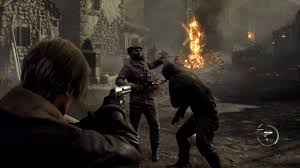
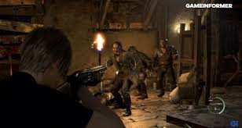

Resident Evil Remake (también conocido como Resident Evil HD Remaster en su versión para consolas de nueva generación) es una versión completamente mejorada y renovada del Resident Evil original de 1996, que fue lanzado en 2002 para GameCube. El remake no solo mejora los gráficos y la jugabilidad, sino que también ofrece una historia más detallada y mecánicas modernizadas, mientras se mantiene fiel al juego original en términos de trama y atmósfera.
¿De qué trata Resident Evil Remake?
El juego sigue a los miembros de la unidad S.T.A.R.S. (Special Tactics and Rescue Service), que son enviados a investigar una serie de misteriosos asesinatos en las afueras de Raccoon City. La historia se desarrolla principalmente en una mansión aislada, donde el grupo descubre que la corporación Umbrella ha estado realizando experimentos ilegales que han dado lugar a la creación de horribles criaturas y zombis. Los personajes principales son Chris Redfield y Jill Valentine, quienes deben resolver acertijos, luchar contra monstruos y descubrir los oscuros secretos detrás de los experimentos de Umbrella.
El remake mantiene la narrativa central del juego original pero introduce cambios que enriquecen la historia, profundizando en los personajes y en la ambientacion, mejorando la inmersion en la trama.
 